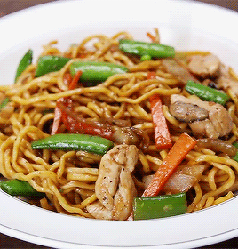

Return Home
Chow Mein

Chowmein, a chef staple!
Chow mein (/ˈtʃaʊ ˈmeɪn/ and /ˈtʃaʊ ˈmiːn/, simplified Chinese: 炒面; traditional Chinese: 炒麵; Pinyin: chǎomiàn) is a Chinese dish made from stir-fried noodles with vegetables and sometimes meat or tofu.
Over the centuries, variations of chǎomiàn were developed in many regions of China; there are several methods of frying the noodles and a range of toppings can be used.
It was introduced in other countries by Chinese immigrants.The dish is popular throughout the Chinese diaspora and appears on the menus of most Chinese restaurants abroad. It is particularly popular in India, Nepal, the UK, and the US.
Ingredients
- 225g dried or fresh egg noodlesdrained
- 1 tbsp sesame oil plus 1 tsp
- 100g boneless, skinless chicken breastscut into fine shreds
- 2½ tbsp groundnut oil
- 2 garlic cloves, finely chopped
- 50g prosciutto or cooked ham, finely shredded/ (or halal options)
- 2 tsp light soy sauce
- 1 tbsp Shaohsing rice wine or dry sherry/ optional
- ½ tsp golden caster sugar
- 2 spring onions, finely chopped
For the marinade
- 2 tsp light soy sauce
- 2 tsp Shaoxing rice wine or dry Sherry/ optional
- 1 tsp sesame oil
- ½ tsp freshly ground white pepper
Prep-Work
- Cook 225g egg noodles in a large pan of boiling water for 3-5 mins, then drain and put them in cold water. Drain thoroughly, toss them with 1 tbsp sesame oil and set aside.
- Combine 100g chicken breasts, cut into fine shreds, with 2 tsp light soy sauce, 2 tsp Shaohsing rice wine or dry sherry, 1 tsp sesame oil, ½ tsp white pepper and ½ tsp salt for the marinade, mix well and then leave to marinate for about 10 mins.
- Heat a wok over a high heat. Add 1 tbsp groundnut oil and, when it is very hot and slightly smoking, add the chicken shreds.
- Stir-fry for about 2 mins and then transfer to a plate.
- Wipe the wok clean, reheat until it is very hot then add 1½ tbsp groundnut oil.
- When the oil is slightly smoking, add the 2 finely chopped garlic cloves and stir-fry for 10 seconds.
- Add 50g finely shredded mangetout and 50g finely shredded prosciutto, and stir-fry for about 1 min.
- Add the noodles, 2 tsp light soy sauce, 2 tsp dark soy sauce,1 tbsp Shaohsing rice wine or dry sherry, ½ tsp white pepper, ½ tsp golden caster sugar, 2 finely chopped spring onions and 1 tsp salt.
- Stir-fry for 2 mins. Return the chicken and any juices to the noodle mixture. Stir-fry for about 3-4 mins or until the chicken is cooked.
- Add 1 tsp sesame oil and give the mixture a few final stirs. Put on a warm platter and serve immediately.